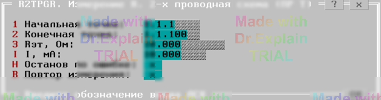

4.2 R2TPGR. Измерение R. 2‑проводная схема (ПР Т)
Утилита определяет погрешность измерения сопротивления с помощью команды
ПР Т, используя вольтметр и программируемый источник тока (ПИТ).
Для ввода параметров теста используется меню (см. рисунок 1).

- Rэт, Ом — значение эталонного сопротивления;
- I, мА — величина тока, программируемая на ПИТ;
- Начальная точка — вход АСК для подключения «+» эталона;
- Конечная точка — вход АСК для подключения «−» эталона.
Подключите магазин эталонных сопротивлений к указанным точкам и нажмите Enter.
Автоматические действия
- Подключить «Начальную точку» к шине A1.
- Подключить «Конечную точку» к шине B1.
- Настроить ПИТ: напряжение 10 В, заданный ток.
- Подключить выход «+» ПИТ к A1 и «−» к B1.
- Переключить вольтметр в диапазон в соответствии с Rэт и I и подключить к A1,B1.
- Проверить стабилизацию тока ПИТ.
- Измерить напряжение и вывести результат.
В протокол теста выводятся, например, следующие строки:
$TST1 Измерений:1 Все норма ПОГРmin=0 ПОГРmax=+0.000 Ом
$TST R2TPGR. Измерение R. 2‑проводная схема (ПР Т) }end
По окончании теста отображается итоговое меню (см. пункт 6.3).